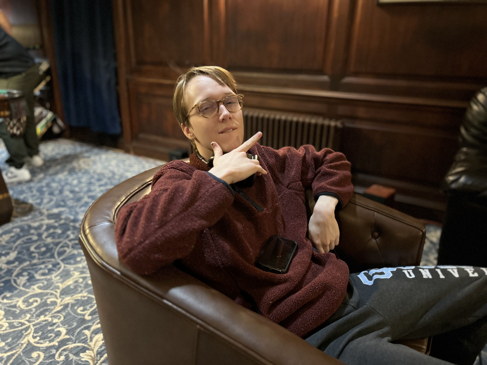
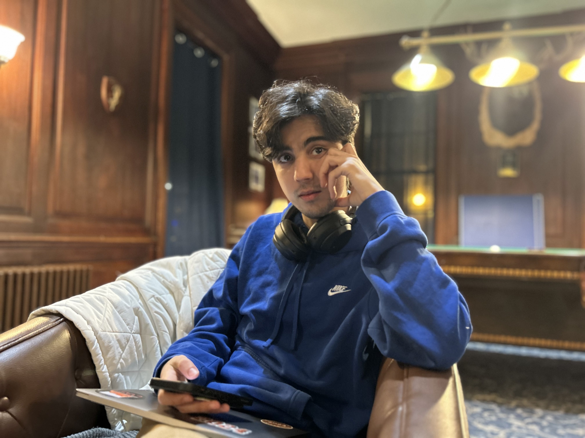

"Well, the reason I ended up at Princeton is because it was less expensive than MIT (haha). When I was a sophomore, I was friends with Elizabeth and Mary and we were deciding which eating club to join. We were between Colo and Quad…we were eating at Colo when we decided to sign into Quad (haha) because we were looking for a place where we could meet new people and make friends. As a junior, I took a gap semester in the fall and came back to a bunch of new people as part of my friend group, but they turned out to be pretty cool. It was strange at first missing so much, but I have the habit of bouncing around places so I am kinda used to it. I went to 4 different high schools and have lived in North Carolina, New Hampshire, Tennessee, and California…That’s why I am so latched to the idea of NYC as a concept. I want to stay somewhere for a long time, somewhere where I am connected to the people and the place. I hated NYC before I came here because I had a fear of rats, but after working there for a summer, I realized that it is so fun! So many things to do, I can walk everywhere, and so many young people."
 Jupiter Ding | Astrophysics 2024 | Collegetown, PA“I’m an astrophysics major and next year I will be starting my PhD in astronomy at Northwestern. I have always liked STEM and research is pretty cool, which is how I’ve ended up here. My career goal is to become a professor in astronomy so I can teach science and give that access to others. Notably, I am aware that the PhD to professor conversion rate it not great (nervous laughter) so I am open to careers in Data Science as well. My dad is also a professor so he influenced me to follow this path…he jokes that having tenure means you can do whatever you want. I don’t know how true it is but I guess I would like to find it haha.”
 Dion Sun, Economics 2024, Jackson, NJ
Dion Sun, Economics 2024, Jackson, NJ
In the bustling corridors of Princeton University, Dion is known for bringing a chill vibe to the world of economics. With a knack for making the most complex theories seem effortlessly cool, Dion breezes through their major with a nonchalant charm that captivates classmates and professors alike. Whether pondering the intricacies of supply and demand or debating the merits of fiscal policy over a cup of coffee, Dion's easygoing demeanor makes learning economics feel like a breeze. Balancing a love for crunching numbers with a passion for kicking back with friends, Dion embodies the perfect blend of academic dedication and laid-back charm. With a smile always at the ready and a genuine love for the subject, Dion proves that you can conquer the world of economics without ever breaking a sweat.
Dion Sun | Economics 2024 | Jackson, NJIn the bustling corridors of Princeton University, Dion is known for bringing a chill vibe to the world of economics. With a knack for making the most complex theories seem effortlessly cool, Dion breezes through their major with a nonchalant charm that captivates classmates and professors alike. Whether pondering the intricacies of supply and demand or debating the merits of fiscal policy over a cup of coffee, Dion's easygoing demeanor makes learning economics feel like a breeze. Balancing a love for crunching numbers with a passion for kicking back with friends, Dion embodies the perfect blend of academic dedication and laid-back charm. With a smile always at the ready and a genuine love for the subject, Dion proves that you can conquer the world of economics without ever breaking a sweat.
In the hallowed halls of Princeton University, Kit is a shining star in the realm of chemistry. Armed with a passion for understanding the building blocks of our world, Kit delves fearlessly into the depths of chemical exploration. From the elegant dance of molecules to the fiery reactions of the laboratory, Kit's enthusiasm for chemistry knows no bounds. With a keen eye for detail and a steady hand in the lab, Kit navigates through complex experiments with grace and determination. Beyond the confines of textbooks and beakers, Kit's inquisitive mind leads them to uncovering new realms of scientific discovery. Whether unraveling the mysteries of organic synthesis or probing the frontiers of quantum chemistry, Kit's dedication to their craft shines brightly, illuminating the path for future generations of aspiring scientists. With a boundless curiosity and a relentless pursuit of knowledge, Kit epitomizes the spirit of scientific inquiry that defines Princeton's legacy of excellence.
 Amir Touil | CS 2024 | Gabes, TunisiaAmir, a brilliant computer science major hailing from the vibrant shores of Tunisia, finds himself immersed in the hallowed halls of Princeton University. With a mind as sharp as the lines of code he crafts, he navigates the complexities of algorithms and data structures with finesse. Yet, amidst the whirlwind of academia, one thing remains constant—his unwavering affection for Mary. From the cobblestone streets of Tunis to the ivy-clad walls of Princeton, Amir's journey is a testament to the power of love and ambition intertwining in the corridors of higher learning. As he delves deeper into his studies, he finds solace and inspiration in Mary's unwavering support, propelling him forward in both his academic pursuits and matters of the heart.